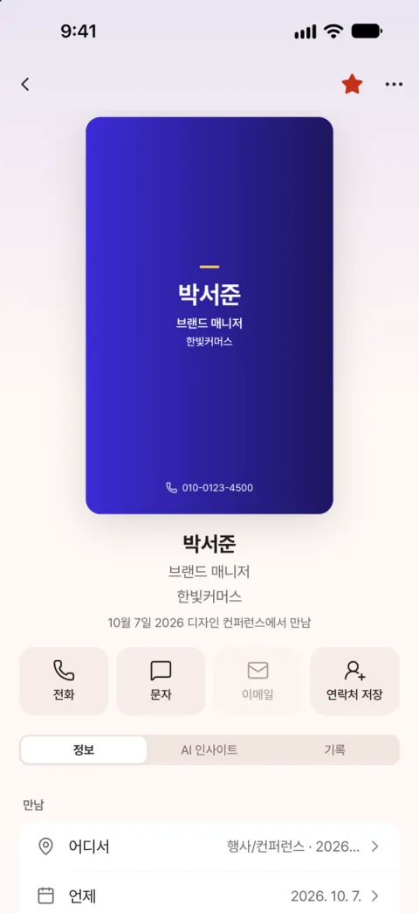
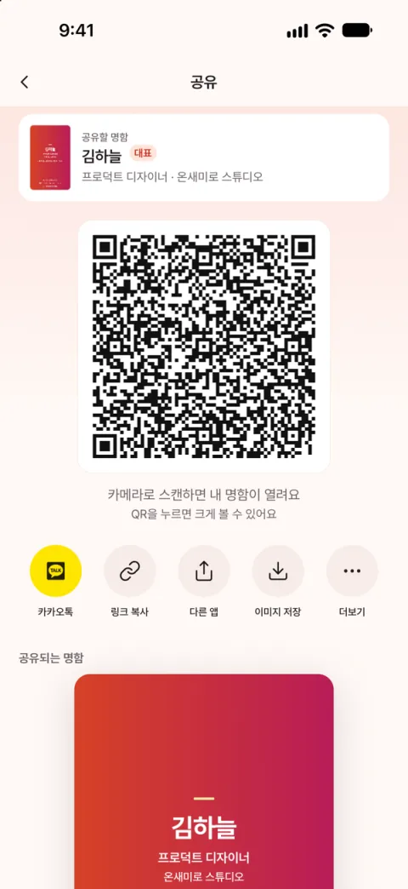
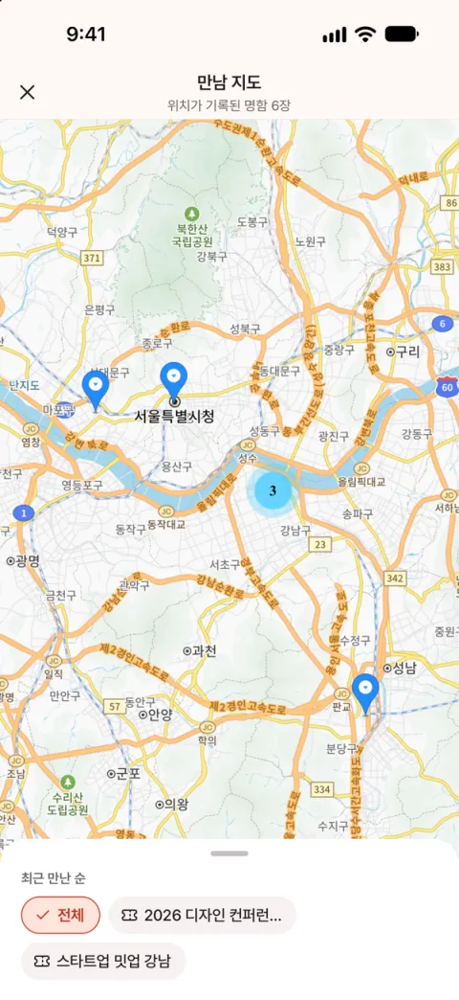
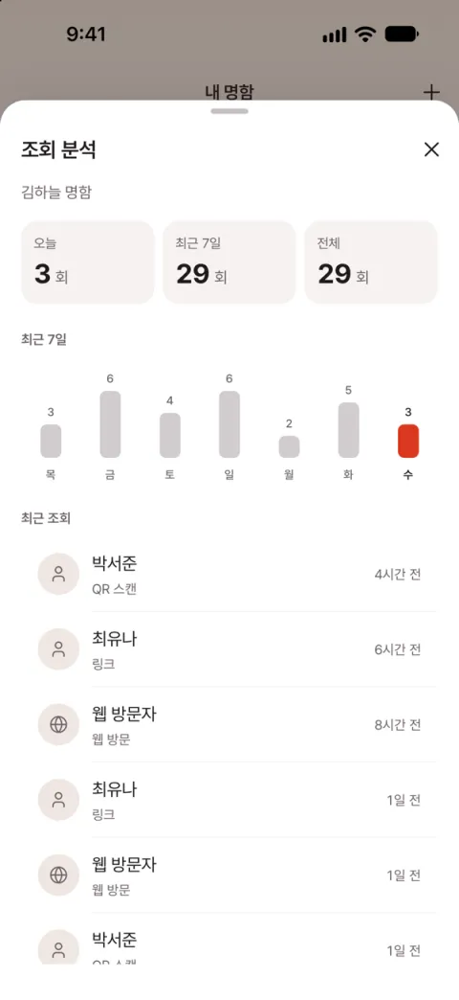

It's me
신재우
Jaewoo Shin
AI·IT 서비스 기획
인하대학교 산업경영공학과
- 인하대학교 산업경영공학과2027.02 졸업 예정
- sjwtlswodn [at] gmail.com
- github.com/13JVV
- 13jvv.github.io
Project · 디지털 명함, 관계 관리 앱
처음 건넨 명함이 다음 만남으로 이어지도록 돕는 앱입니다. 첫 명함을 만들어 건네고, 언제 어디서 만났는지와 바뀐 연락처를 이어서 관리합니다.
App Store, Google Play 출시 후 운영 중 (2026.09 기준 iOS 1.4.2, Android 1.0.20)



명함은 제가 앱에서 사용하는 세로 명함을 웹으로 옮긴 예시이고, QR 두 개는 실제로 스캔되는 코드입니다.
신재우
Jaewoo Shin
AI·IT 서비스 기획
인하대학교 산업경영공학과
앱 홈 화면의 세로 명함 형태를 웹으로 다시 그린 예시입니다.
App Store 설치 페이지가 바로 열립니다.안드로이드 휴대폰이라면 아래 Google Play 링크로 설치할 수 있습니다.
앱에 들어 있는 스캐너가 It's me 명함 링크를 읽고 받은 명함 카드를 띄웁니다.‘지갑에 저장’을 누르면 제 명함이 지갑에 들어갑니다.
제 앱 명함의 이름, 소속, 직함, 연락처가 한 장에 담겨 저장됩니다.제가 명함을 고치면 지갑의 명함도 자동으로 최신화되고, 언제 받았는지도 남습니다.
앱이 이미 있으면 기본 카메라로 명함 QR을 찍어도 앱이 열려 지갑에 저장되고,앱이 없으면 웹 명함 페이지가 열립니다.
명함 그림은 학과, 메일, GitHub, 포트폴리오까지 담을 수 있다는 걸 보여 주는 예시입니다. QR은 제가 앱에서 실제로 공유하는 대표 명함입니다.
Problem
Positioning
| 기준 | 받은 명함을 모으는 앱 (예: 리멤버) | It's me |
|---|---|---|
| 초점 | 받은 명함을 스캔해 쌓아 두기 | 첫 명함을 만들어 건네고, 그 인연을 이어 가기 |
| 명함의 의미 | 수집 대상 | 첫인상 |
| 설계의 중심 | 명함을 받는 순간 | 교환 이후: 만남 위치와 시점 기록, 바뀐 명함 자동 갱신, 만남 브리핑 |
방향을 정할 때 사용한 기준을 정리한 표입니다. 각 경쟁 앱의 전체 기능을 비교한 결과는 아닙니다.
Planning
1인 개발이라 처음 건네는 순간에 필요한 기능부터 우선순위를 정했습니다.
명함 생성, 편집, QR 공유와 앱이 없는 상대도 여는 웹 명함, 소셜 및 이메일 로그인 5종과 계정 삭제
지갑, 행사별 그룹핑, 검색과 종이 명함 인식 후 사용자 확인, 바뀐 명함 자동 최신화
만남 브리핑, 안부 문자 초안, 관계 온도, 만남 지도, 조회 분석, 위젯과 Wallet, 내보내기
Decisions
2026년 3월 첫 커밋부터 명함 생성과 QR 공유에 집중했고, 5월에 한국 App Store에 v1.0을 출시했습니다.명함 스캔, 지갑, 관계 관리 기능은 실제 사용 흐름을 확인한 뒤 붙였습니다.
촬영 각도나 조명 때문에 인식이 불확실한 명함을 자동으로 저장하면 틀린 연락처가 지갑에 쌓입니다.인식 결과는 저장 전에 사용자가 고칠 수 있는 확인 단계를 반드시 거치게 했습니다.명함 인식에는 정확도를 우선해 Claude Vision을, 브리핑과 안부 문자에는 비용과 속도를 우선해 Claude Haiku를 사용했습니다.
1.4 제출본이 구글 로그인 크래시(2.1a), 카메라 권한 목적 미고지(5.1.1), 동작하지 않는 NFC 노출(2.1)로 연속 반려됐습니다.세 건을 코드 결함, 권한 고지, 미완성 기능 노출로 나눠 다르게 대응했습니다.로그인 흐름을 고치고, 권한 문구를 사용하는 화면의 맥락에 맞게 다시 썼고, NFC는 마감 안에 억지로 구현하지 않고 제거했습니다.
가족과 지인에게 설치해 보게 했더니 기능이 많아 시작점을 못 찾는다는 의견이 나왔습니다.이를 정보 구조의 문제로 보고, iOS 화면을 세로 명함과 4개 탭 구조로 다시 구성했습니다.편집과 설정은 아코디언으로 나누고, 받은 명함 상세는 정보, AI 인사이트, 기록 3탭으로 분리했습니다.
AI 호출과 카카오, 네이버 로그인 토큰 교환은 모두 Cloud Functions를 거칩니다.키가 앱 번들에 실리지 않고, 모델을 바꿔도 앱을 다시 배포할 필요가 없습니다.실제로 모델이 폐기돼 AI 기능이 한꺼번에 멈춘 적이 있었는데, 프록시에서 폐기 모델을 자동으로 바꾸도록 해 앱 업데이트 없이 복구했습니다.
Debugging
증상, 원인, 해결, 결과 순으로 정리했습니다.
배운 점 사진 권한을 이미 허용해 둔 개발 기기에서만 테스트한 탓에 어머니 휴대폰에서 저장 실패를 처음 봤습니다. 그 뒤로 ‘내 기기에서 되는 것’과 ‘출시된 앱에서 되는 것’을 따로 확인합니다.
Architecture
웹 명함 페이지 Firebase Hosting에서 앱 없이 명함을 열어 볼 수 있고, 조회 기록은 명함 주인에게 FCM 푸시로 전달됩니다.
| AI 기능 | 모델 | 설계에서 신경 쓴 점 |
|---|---|---|
| 종이 명함 인식 | Claude Vision | 결과를 저장 전에 사용자가 수정, 20초 타임아웃과 단계별 진행 문구 |
| 만남 브리핑 | Claude Haiku | 만남 맥락, 대화 기록, 명함 변경 이력을 묶어 다시 만나기 전 30초 요약, 결과를 저장해 재호출하지 않음 |
| 안부 문자 초안 | Claude Haiku | 어색한 첫 문장을 대신 쓰고, 보내면 기록에 남김 |
| 한 줄 소개 | Claude Haiku | 이름, 직함, 소속만으로 초안을 만들고 다시 만들기 가능 |
AI는 사용자가 검토할 인식 결과와 문안 초안을 제공합니다. 인식 정확도, 브리핑 품질, 관계 유지율에 대한 정량 평가는 아직 이 기록에 포함하지 않았습니다.
AI Agents
기존 화면과 서비스 모듈의 의존 관계를 읽고 변경 영향 범위 정리반복되는 타입, 입력 검증, 화면 상태, Functions 프록시 코드 생성심사 시나리오와 사용자 피드백을 재현하는 체크리스트, 회귀 테스트 초안
P0, P1, P2 우선순위와 ‘저장 전 사용자 확인’이라는 신뢰 기준기능별 모델 선택 (인식은 Vision, 문안은 Haiku)최종 배포 여부와 심사 대응, iOS와 Android 실기기 확인
Claude Code와 Codex는 화면, 타입, Cloud Functions처럼 반복되는 작업을 빠르게 정리하는 데 사용했습니다.먼저 데이터 경계와 수용 기준을 적고, 에이전트가 만든 변경은 실기기와 심사 체크리스트로 다시 확인했습니다.
Screens
화면 속 명함은 예시 인물입니다. 사진을 누르면 크게 볼 수 있습니다.



Timeline
Stack
| 영역 | 기술 | 이유, 한 일 |
|---|---|---|
| 앱 | React Native, TypeScript | iOS를 먼저 내고 Android까지 한 코드베이스로 이식 |
| 백엔드 | Firebase (Auth, Firestore, Storage, Functions, Hosting) | 서버 운영 인력이 없는 1인 프로젝트에 맞춘 선택, 보안 규칙과 인덱스까지 직접 관리 |
| AI | Claude API (Vision, Haiku) | 키를 앱에 넣지 않기 위해 모두 Functions 프록시를 거침 |
| 인증 | 카카오, 네이버, 구글, Apple, 이메일 | 카카오와 네이버는 커스텀 토큰 발급을 Functions로 직접 구현 |
| 네이티브 | Swift (WidgetKit), Kotlin | 위젯 QR 표시, Android 키보드 인셋 처리 |
| 링크 | Universal Links, App Links | 기본 카메라로 QR을 찍어도 앱이 열리도록 연결, 앱이 없으면 웹 명함 |
| 연동 | Apple Wallet (PassKit), FCM | Wallet 패스 발급, 명함 변경과 조회 알림 |
Next
다음 버전은 영어 지원과 배포 국가 확대를 준비하고 있습니다.출시와 심사 통과, 실시간 갱신과 푸시 검증이 지금까지 이 기록이 보여 주는 결과입니다.사용자 수, 재방문율, 관계 유지 효과는 아직 수치로 제시하지 않습니다.커밋 수와 코드 줄 수는 구현 범위를 설명할 뿐, 제품의 사용 효과를 뜻하지 않습니다.
More projects